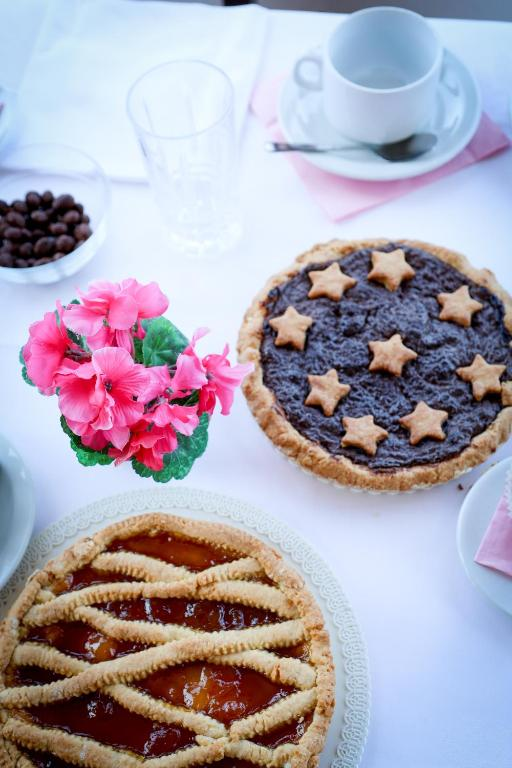
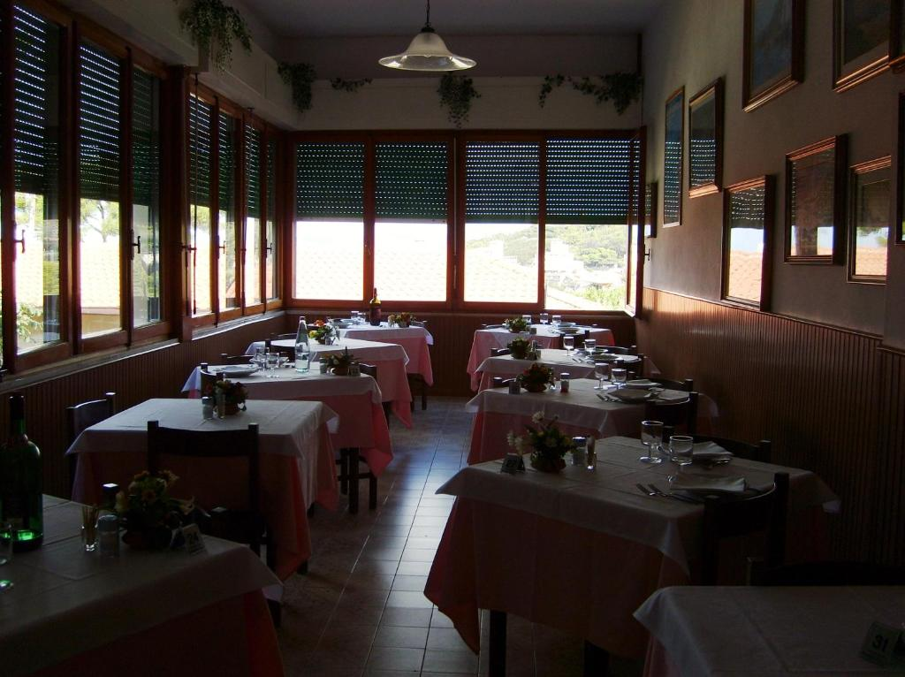

Dolci fatti in casa, ricette di famiglia e un'atmosfera che sa di altri tempi


Un'atmosfera d'altri tempiAlla base di ogni giornata all'Albergo Bartoli c'è una colazione che profuma di casa: dolci artigianali preparati ogni giorno con le tradizionali ricette di famiglia, che cambiano di mattina in mattina.
Accanto ai dolci fatti in casa, un ricco buffet continentale con cereali, yogurt, affettati, uova, formaggi, croissant e succhi di frutta. Ad accogliervi, uno staff sorridente pronto a trasportarvi indietro nel tempo, nel gusto della più autentica tradizione.
"Il buon giorno si vede dal mattino."— un detto, e una promessa
Ricette di famiglia, preparate ogni giorno con cura artigianale
Cereali, yogurt, affettati, uova, formaggi, croissant e succhi
Le stesse tradizioni tramandate dal 1952, di generazione in generazione
Un'accoglienza calorosa, sorridente, senza fretta